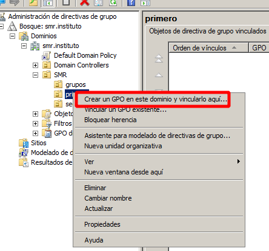
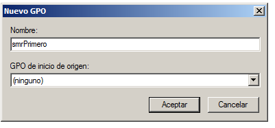
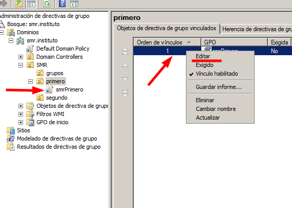

Como se aplican las GPO
Podremos entender las directivas del sistema como un mecanismo mediante el cual múltiples parámetros del entorno de trabajo son configurados por el administrador del sistema, de modo que todos los usuarios deberán asumir dichas configuraciones con independencia de sus preferencias.
Existen miles de directivas de grupo que pueden ser configuradas, y cada una de ellas permitirá configurar algún parámetro del entorno de trabajo del equipo y de sus usuarios. A continuación se muestran algunas que pueden ser utiles para establecer la configuración de los usuarios.
Curiosamente, y pese a su nombre, las Directivas de Grupo no pueden ser asociadas a un grupo de usuarios o grupos de equipos, pues tan sólo son aplicables a Sitios, Dominios o Unidades Organizativas, y el resultado de su aplicación afecta a los usuarios y a los equipos del dominio.
La Directiva de Grupo se aplica de manera jerárquica desde el grupo menos restrictivo (Sitio) al grupo más restrictivo (Unidad Organizativa). La Directiva de Grupo también es acumulativa. Los contenedores de servicio de directorio secundarios heredan la Directiva de Grupo de los contenedores primarios y el procesamiento de la Directiva de Grupo tiene lugar en el siguiente orden: Sitio, Dominio y Unidad Organizativa. Esto significa que, si se ha asignado una Directiva de Grupo determinada a un contenedor primario de alto nivel, esa Directiva de Grupo se aplica a todos los contenedores por debajo de dicho contenedor primario, incluidos los objetos equipo y usuario de cada contenedor. Sin embargo, si especifica de manera explícita una Directiva de Grupo para un contenedor secundario, dicha directiva suplantará a la del contenedor primario, si es que son contradictorias, y se sumará a la anterior si no lo son.
Para crear una GPO solo tenemos que hacer click derecho en una OU y seleccionar "crear GPO en este dominio y vincularlo aquí".
Le damos un nombre
Y nos aparece debejo de la OU y a la derecha, la podemos editar haciendo click derecho en cualquier de los dos lados.
Una vez creada la GPO se aplica a todos los objetos ( usuarios, grupos, equipos u otras OU ) contenidas en la OU.
Conjunto resultante de directivas
Podemos saber el conjunto resultante de directivas, es decir, todas las directivas que se estan aplicando en un momento dado, escribiendo rsop.msc en la consola ( o en ejecutar ). La ventana que se abre nos muestra el arbol de directivas, con solo la directivas activas y de que GPO proceden.